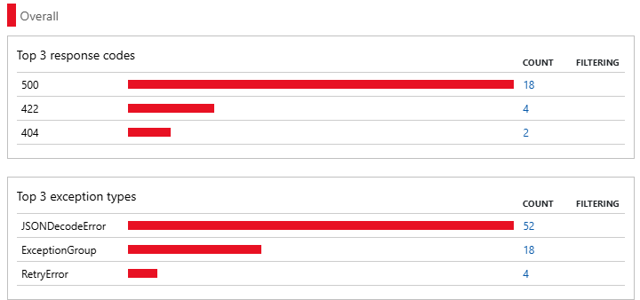
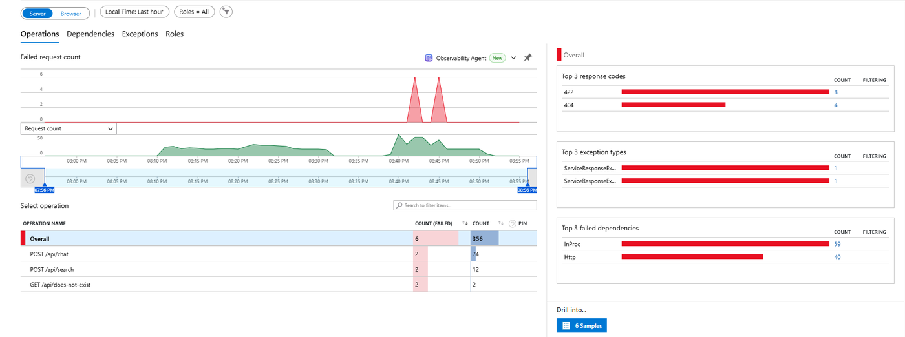
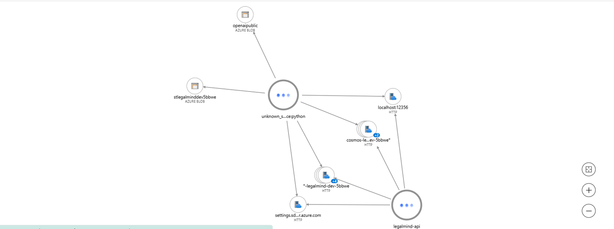

TL;DR — LegalMind checks every answer against its sources before showing it. The check ran on every request and every test passed. Application Insights showed it had crashed 52 times — and each time, the code reported the answer as grounded. A safety check that fails open is worse than none, because it makes you believe you're protected. Here's how I found it, the fix, and three other things the dashboards told me that no test would have.
LegalMind has a safety net I was proud of. After a specialist agent writes an answer, a second model call — the groundedness check — compares every claim with the passages that were retrieved, and flags anything they don't support. In legal work an invented article number isn't a typo; it's a liability.
The check ran on every answer. The unit tests passed. Then I opened Application Insights.
52 errors that never reached a user
The Failures blade showed 52 × JSONDecodeError.

52 ×JSONDecodeError — every one of them a groundedness check that crashed and reported "grounded".
No user had seen an error. No request had failed. Drilling into one exception led straight to the guardrails module. The check asked the model for JSON in the prompt — but nothing enforced JSON, and now and then the reply wasn't something json.loads would accept: text around the object, a code fence, a truncated answer. Parsing failed. And then the except block did this:
except Exception:
logger.exception("groundedness_check_error")
# Fail open — assume grounded if check fails
return GroundednessResult(
score=0.5,
is_grounded=True,
explanation="Groundedness check failed; assuming grounded.",
)
The comment even says it: fail open. Fifty-two times, the hallucination check broke and reported "grounded". If any of those 52 answers contained an invented reference, it reached the user with a clean bill of health — and the logs said everything was fine.
Why the tests didn't catch it
The unit tests mocked the model with tidy JSON. They tested what the code did when everything worked. Nobody — me included — had written the test "what happens when the model returns something that isn't JSON?", because that failure mode wasn't in my head.
It was only visible in production telemetry, where real model outputs are messy.
The fix: fail closed, or at least fail loud
Three changes:
- Enforce the format.
response_format={"type": "json_object"}puts the model in JSON mode. - Parse tolerantly. Strip code fences, find the outermost
{…}, then parse. - Never pretend. If the check still fails, the answer is labelled
unverified, the UI says so, and a warning is logged where an alert can find it.
except Exception:
logger.exception("groundedness_check_error")
# Don't pretend the answer was checked: it is delivered, but flagged as unverified.
return GroundednessResult(score=0.0, is_grounded=False, verified=False,
explanation="Groundedness check failed; the answer could not be verified.")
The next run: zero JSONDecodeErrors.
That label then grew into something users actually see. Every answer now carries grounding: documents | not_grounded | unverified | no_documents, and the UI shows a notice for the last three. A legal professional gets the answer and knows how far to trust it.

After the fix: the only failed requests are the deliberate 422s and 404s from the traffic generator.What else the dashboards knew
Once I started looking, the application map had more to say.
My service was called unknown_service:python. OpenTelemetry names services from the OTEL_SERVICE_NAME environment variable; I'd never set it. One line in the Dockerfile.
There was a dependency I never designed: openaipublic. An Azure blob store, called from my API. It turned out tiktoken — the library I use to count tokens — downloads its token tables from a public storage account the first time it runs. So every cold start of my container depended on someone else's storage. The tables are now downloaded at build time and baked into the image.
A mysterious localhost:12356 turned out to be the best kind of surprise: the Container Apps managed-identity endpoint. My app fetching Entra ID tokens instead of using keys — visible on a map.

Two days in one picture: the oldunknown_service:python (with openaipublic) and the new legalmind-api (without it).
And not every red number is a bug. The final run showed 59 "failed" Cosmos DB calls and 40 failed calls to Azure OpenAI. Grouping by result code explained both: the Cosmos ones were 404s — the app reads a conversation before creating it, and new conversations don't exist yet — and the OpenAI ones were 429s, rate limiting during a deliberate load burst. "Failed" in a dashboard means "not 2xx". Always group by result code before drawing conclusions.
The lesson
Takeaways - Search your code for
except: … return True— oris_valid = True,allowed = True. Every guardrail, validator and safety check has a failure path, and the instinct "don't break the user's request" quietly turns a safety feature into decoration. - A guard that fails open is worse than no guard: it makes you believe you're protected. - Make the failure visible — a label, a warning, an alert — rather than choosing between "block everything" and "pretend". - Open your dashboards before you think you're done. Tests tell you the code does what you expected. Telemetry tells you what it actually does.
In Part 3, I stop guessing which parts of the pipeline help — and measure them.
LegalMind AI is open source: github.com/munyaradzi-zhou/LegalMind-AI. The sample organisation and documents are fictional; LegalMind is a demonstration, not legal advice.